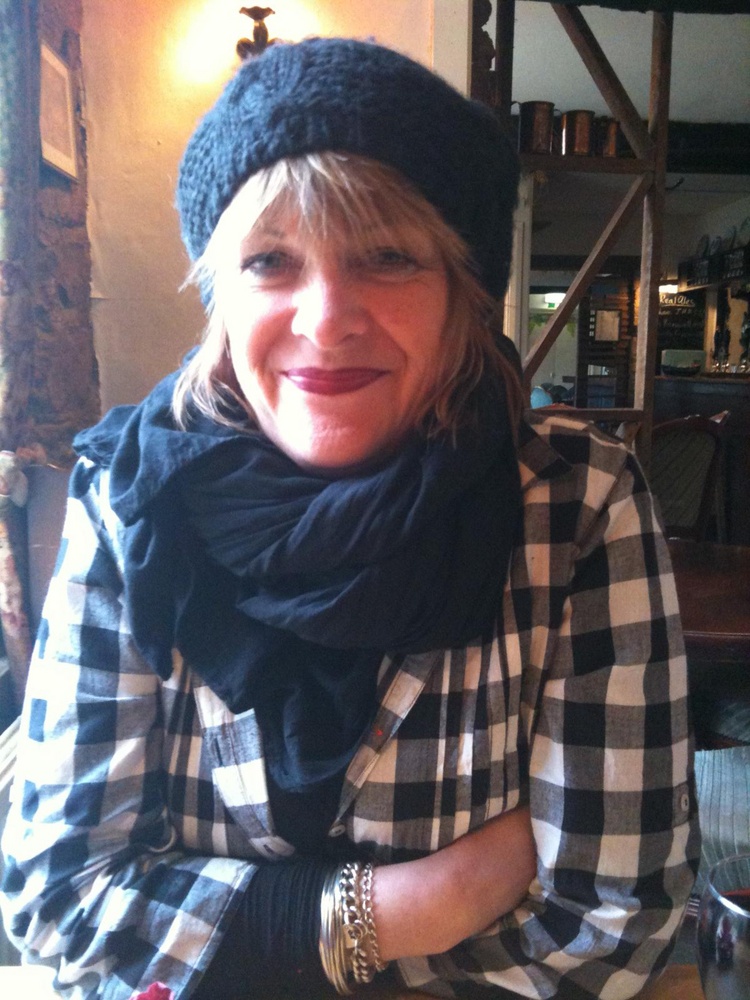

We're not a brand, we're just Beans!
Beans - Oundle
Beans Coffee Stop...beautiful location, beautiful atmosphere, beautiful coffee, what other reasons do you need to love coffee and cake!

Our History
Where it all started
Beans Coffee Stop Limited, founded by Phil and Karen Gilbert in late 2003, opened its first successful shop in Oundle on February 16, 2004. A second branch followed in Stamford in November 2004. By July 2006, Beans expanded to Higham Ferrers, with a unique shop design. In 2007, the smallest location opened in Oakham, followed by Olney in 2008 and Uppingham later that year. Over time, the shops were sold, and by May 2016, only the original Oundle café remained, marking a full circle for the business.
Our Ethos
What will you find when you arrive at Beans?
Beans offers a high-class environment with quality furnishings and modern décor, while respecting the period nature of its Grade 2 Listed building in the historic market town of Oundle. Catering to the top end of the coffee shop market, it provides great coffee, homemade snacks, and lunches. Known for its famous Ice Cream Milkshakes and reputation as “the place to be” for all ages, Beans is ideal for working, socializing, or relaxing with free WiFi. Unique touches like wallchart World atlases and Micki Longley's artwork add to its distinct charm, along with a commitment to Fairtrade.
Our Ethics
Fairtrade
All of Beans’ coffee is made from freshly ground Fairtrade beans, ensuring no compromise on quality. Beans is committed to finding new Fairtrade products to enhance its range. Fairtrade guarantees a fair, stable price for farmers, helping them support their families and invest in a better future. The Fairtrade mark ensures disadvantaged farmers and workers receive a fair deal. More information can be found at www.fairtrade.org.uk.
Recylcing
Beans is committed to recycling plastics, glass, and paper, working with ethical waste management companies. They also use recycled packaging and have introduced fully compostable takeaway products, including cups, lids, straws, and containers, to minimize their environmental footprint and support sustainability.
Charity
We are always happy to support local charities, and have an area near the loos dedicated to publicising local charitable or art events. We also love to provide raffle prizes or sponsorship for good causes.
OUR KAREN
So, it’s Beans’ 18th year – yes it’s really been that long! Karen & Phil opened Oundle Beans in February 2004 and since then we’ve gone from strength to strength, and now enjoy (if you will pardon our slight bit of self congratulation) being part of the Oundle fabric! However, 2018 was an extremely sad year for all of us here – customers as well as staff. Karen was the inspiration for the design and decor from the initial opening of our shop up to the present day, for both this and the other Beans cafes. Unfortunately Karen had been battling with cancer since 2002, but she refused to bow to it and carried on as if it was just a common cold. However, after 16 years Karen finally met a match for her stoicism and bravery, with the inevitable outcome. Karen was an inspiration in the truest sense of the word, and we sorely miss her cheerfulness, ideas, organisation and incredible work ethic.
RIP
Karen Lesley Gilbert
1958 – 2018

Our Menu